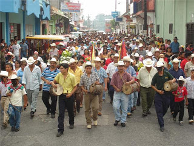
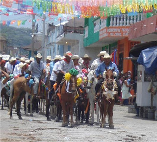
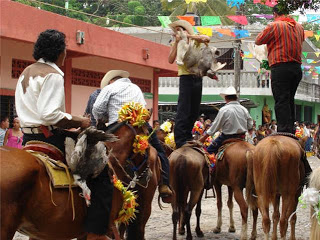
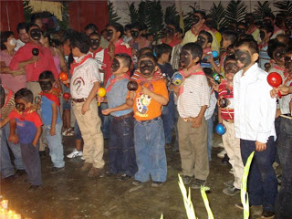
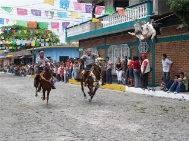

Entre una mezcla de divinidad y fuertes tintes de paganismo, se hacen presentes, como hace ya varias décadas, en la tradicional fiesta en honor a San Pedro Mártir, donde cobran vida una serie de ritos sagrados y de creencia entre sus pobladores y centenares de peregrinos de distintas partes del país
En el municipio de Tuxtla Chico, Chiapas, allí el escepticismo hace una mixtura de unidad entre lo que es sagrado y lo profano, donde el concepto cíclico o esférico del tiempo, el rechazo a considerar a la naturaleza como propiedad privada del hombre, que puede explotarla y destruirla de forma arbitraria; la cura de enfermedades inexplicables, las creencias de un pueblo, las voces de mando, la fe y devoción, las sanaciones de males incurables y la devolución de vida a personas desahuciadas son el resultado de ofrecer una fiesta en honor a su santo San Pedro Mártir. Los llamados cofrades y su arraigo cultural cargado de fe y religiosidad, ponen en práctica dogmas que para algunos son bien vistos, aunque para otros son ritos considerados fetichistas o de chamanes, alejados del catolicismo y un sinfín de iglesias cristianas.
Las costumbres y tradiciones aún perduran, dando espacio a la hechicería, mezcla de los sacrificios, los ritos de los Vudos (negros) traídos por los misioneros dominicos, forman parte del llamado Teatro Popular. Según los cofrades, los españoles utilizaron esta técnica para evangelizar e imponer la religión, amalgamados, dieron lugar a la festividad ritual de San Pedro Mártir o mejor conocida como “Jalada de Patos”. Según los estudios y aportaciones de personajes históricos de esta ciudad, narran que los primeros misioneros dominicos así como algunos soldados españoles que el conquistador Pedro de Alvarado fue dejando a su paso en la costa de Chiapas, se encontró con los pobladores de Izapa, una cultura mística y enigmática, considerada como toda cultura prehispánica como politeísta, misma que rendía tributo con sacrificios humanos y de animales. Por ellos los frailes decidieron buscar dentro de su santoral a un beato que se identificará con el herejismo de nuestro pueblo, teniendo por fortuna dentro la hermandad dominica a San Pedro Mártir, hereje convertido al cristianismo y gran evangelizador en Italia cuya fama obligó al Papa nombrarlo Inquisidor General para toda la península itálica, quien en lugar de acusar a los herejes ante la Santa Inquisición los evangelizaba y convertía al catolicismo. Fe y Religiosidad acompañadas del Teatro Callejero Desde entonces hasta nuestros días, los habitantes de Tuxtla Chico, doblegados en su momento por estos frailes españoles, empezaron con las representaciones teatrales por las calles y plazas públicas del pueblo, destacando en ellas los rituales que consisten en la velación de las armas y banderas, las múltiples oraciones y cumplimiento de penitencias. Se lleva a cabo del 22 al 29 de abril.
Barrio de Santiago, Tuxtla Chico.
Barrio de Santiago, Tuxtla Chico.
Danzas, comidas y rituales tradicionales como la “carrera de los patos”.





posicione el mouse sobre las imágenes